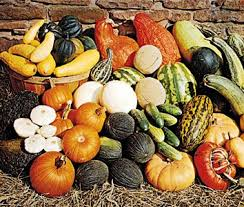

Cucurbitaceae
Gourd Family / Cucumber Family / Melon Family
The Cucurbitaceae family, commonly known as the gourd family, is economically one of the most important plant families, providing staple foods like squash, pumpkins, melons, and cucumbers. Mostly comprising herbaceous vines with characteristic tendrils, the family is predominantly found in tropical and subtropical regions, though many species are cultivated worldwide in temperate climates.
Overview
Cucurbitaceae is a medium-sized family of about 95-100 genera and nearly 1000 species. Its members are typically fast-growing, scrambling or climbing vines adapted to warm conditions. The family's significance lies heavily in its cultivated species, which are essential food sources globally, valued for their fleshy fruits.
Key features include the vining habit aided by tendrils, alternate and often palmately lobed leaves, typically large and unisexual flowers (plants usually monoecious or dioecious), and the characteristic fruit type known as a pepo – a berry with a hard rind. The family belongs to the order Cucurbitales within the Fabid (Nitrogen-fixing) clade of rosids.
Many wild species possess bitter compounds called cucurbitacins, which deter herbivores but have been largely bred out of cultivated varieties. These compounds are characteristic chemical markers for the family.
Quick Facts
- Scientific Name: Cucurbitaceae Juss.
- Common Name: Gourd family, Cucumber family, Melon family, Squash family
- Number of Genera: Approximately 95-100
- Number of Species: Approximately 960-1000
- Distribution: Primarily tropical and subtropical worldwide; many species cultivated globally in temperate zones.
- Evolutionary Group: Eudicots - Rosids - Fabids - Cucurbitales
Key Characteristics
Growth Form and Habit
Most members are herbaceous annual or perennial vines or lianas. They climb or scramble using tendrils, which are typically branched and arise laterally beside the petiole base (morphologically debated origin, possibly modified shoots or stipules). Stems are often angular or furrowed and may be hollow. Rare exceptions include shrubby or pachycaul tree forms like Dendrosicyos.
Leaves
Leaves are arranged alternately along the stem. They are typically simple but often palmately lobed or veined, resembling a hand's shape, though some can be compound or unlobed. Leaves usually lack stipules and are often covered in hairs (pubescent).
Inflorescence
Flowers are frequently borne solitary in the leaf axils or in small axillary clusters such as cymes or fascicles (tight bundles). Some species may have racemes.
Flowers
Flowers are typically unisexual, with male (staminate) and female (pistillate) flowers on the same plant (monoecious) or different plants (dioecious), though rarely bisexual. They are usually radially symmetrical (actinomorphic), often large and showy, commonly yellow or white, and typically 5-merous. A floral tube (hypanthium) formed from the fused bases of sepals, petals, and stamens is usually present and surrounds or sits atop the ovary.
- Calyx: 5 sepals, usually fused at the base, attached to the hypanthium rim.
- Corolla: 5 petals, often fused at the base (sympetalous) forming a bell-shaped (campanulate) or funnel-shaped structure, attached to the hypanthium rim.
- Androecium (Male flowers): Highly variable, typically appearing as 3 stamens due to complex fusion and modification patterns (often interpreted as 2 stamens with two pollen sacs (thecae) each, and 1 stamen with one theca). Anthers are often large, convoluted, folded (S-shaped), or twisted. Filaments are inserted on the hypanthium.
- Gynoecium (Female flowers): Features a prominent inferior ovary (located below the attachment point of other floral parts), typically composed of 3 fused carpels. It usually has one chamber (locule) with numerous ovules attached to the walls (parietal placentation), although placental growth can make it appear 3-locular. Styles are usually united into a column, topped by large, often lobed stigmas. Sterile stamens (staminodes) may be present.
Fruits and Seeds
The characteristic fruit is the pepo, a type of berry developing from an inferior ovary, with a hard or leathery rind formed from the ovary wall fused with the surrounding hypanthium tissue. Examples include watermelons, cucumbers, squash, and pumpkins. Some species produce fleshy berries without hard rinds or dry, dehiscent capsules (e.g., Ecballium, the squirting cucumber). Fruits contain numerous, flattened seeds, often with a prominent seed coat and lacking endosperm (nutritive tissue).
Chemical Characteristics
The family is known for producing cucurbitacins, a group of bitter-tasting tetracyclic triterpenoids. These compounds act as potent feeding deterrents to many animals and are characteristic secondary metabolites of the family, although their concentration is greatly reduced in most cultivated varieties.
Field Identification
Identifying members of the Cucurbitaceae family, especially cultivated ones, is often straightforward due to their distinctive features:
Primary Identification Features
- Vining habit with tendrils: Look for sprawling or climbing herbaceous vines bearing coiled or branching tendrils, typically arising next to the leaf petiole.
- Alternate, palmately lobed/veined leaves: The leaf arrangement and shape are characteristic.
- Large, unisexual flowers: Usually yellow or white, 5-parted flowers. Check female flowers for the distinct inferior ovary below the petals.
- Pepo fruit: The presence of a gourd, squash, melon, or cucumber-like fruit (a berry with a hard rind) is often diagnostic.
Secondary Identification Features
- Hairy stems and leaves: Many species are noticeably pubescent or scabrous (rough to the touch).
- Angular stems: Stems are often 5-angled or ridged.
- Bitterness (wild relatives): Wild or non-cultivated forms may taste intensely bitter due to cucurbitacins.
Seasonal Identification Tips
Identification is easiest during the growing season:
- Spring/Summer (Growth): Look for the characteristic vining habit, tendrils, and leaf shape.
- Summer/Fall (Flowering & Fruiting): The large, distinct flowers (check for inferior ovary in female flowers) and especially the unique pepo fruits are key identifiers. Many are annuals in temperate regions, completing their life cycle within one season.
Common Confusion Points
Other vining families might cause confusion, but the combination of features is usually distinct:
- Passifloraceae (Passionflower family): Also has vines with tendrils and often lobed leaves, but flowers are typically bisexual with a complex corona structure, and the fruit is usually a berry or capsule, not a pepo. Ovary is superior.
- Vitaceae (Grape family): Vines with tendrils (tendrils opposite the leaves) and often palmately lobed leaves, but flowers are small, greenish, usually bisexual, with a superior ovary, and the fruit is a standard berry.
- Convolvulaceae (Morning Glory family): Vining habit, but usually lacks tendrils (twines) and has funnel-shaped bisexual flowers with a superior ovary.
Field Guide Quick Reference
Look For:
- Herbaceous vines with tendrils
- Alternate, often palmately lobed leaves
- Large, yellow/white unisexual flowers
- Inferior ovary (female flowers)
- Pepo fruit (gourd, melon, squash)
- Angular stems, often hairy
Key Variations:
- Monoecious or dioecious plants
- Leaf lobing varies greatly
- Fruit size, shape, color, texture extremely diverse
- Tendrils simple or branched
- Wild types often bitter
Notable Examples
The Cucurbitaceae family includes numerous globally important food crops and other useful plants:

Cucumis sativus
Cucumber
Widely cultivated for its crisp, elongated fruit, used fresh in salads or pickled. Native to South Asia but grown globally. Monoecious varieties are common in cultivation.

Citrullus lanatus
Watermelon
Valued for its large, sweet, water-rich fruit. Native to Africa. Leaves are often deeply pinnately lobed rather than palmately lobed. Numerous cultivars exist.

Cucurbita pepo
Pumpkin / Zucchini / Summer Squash
An incredibly diverse species native to the Americas, including common pumpkins, zucchini, acorn squash, spaghetti squash, and various ornamental gourds. Characterized by prickly stems and leaves.

Cucumis melo
Melon
Includes cantaloupes, honeydews, muskmelons, and casabas. Native to Persia/Africa. Known for sweet, aromatic flesh and diverse rind textures and colors.

Lagenaria siceraria
Bottle Gourd / Calabash
One of the first cultivated plants, grown for its hard-shelled mature fruit used as containers, instruments, and utensils. Young fruits are edible. Has white, night-blooming flowers.

Luffa aegyptiaca / L. cylindrica
Luffa / Loofah
Cultivated for the fibrous interior of its mature, dried fruit, used as a scrubbing sponge (vegetable sponge). Young fruits are edible in some Asian cuisines.
Phylogeny and Classification
Cucurbitaceae is placed in the order Cucurbitales, which belongs to the Fabid (or nitrogen-fixing) clade within the rosids. This placement is well-supported by molecular data, though morphologically the families within Cucurbitales are quite diverse.
Within Cucurbitales, Cucurbitaceae's closest relatives include Begoniaceae (Begonia family), Datiscaceae, and Anisophylleaceae. Despite the order's heterogeneity, shared characteristics like parietal placentation (though sometimes modified in Cucurbitaceae) link some members. The evolution of the pepo fruit and the diversification related to pollination syndromes and chemical defenses (cucurbitacins) are key aspects of the family's evolutionary history.
Position in Plant Phylogeny
- Kingdom: Plantae
- Clade: Angiosperms (Flowering plants)
- Clade: Eudicots
- Clade: Rosids
- Clade: Fabids (Nitrogen-fixing clade)
- Order: Cucurbitales
- Family: Cucurbitaceae
Evolutionary Significance
The Cucurbitaceae family showcases several significant evolutionary aspects:
- Economic Importance: Represents a major center of crop domestication, with independent origins of agriculture in different parts of the world involving various cucurbits.
- Fruit Diversity: Extreme variation in fruit size, shape, and structure (the pepo) provides models for studying fruit development and evolution.
- Pollination Biology: Diverse pollination mechanisms, often involving specialized bee pollinators attracted to large, nectar-rich flowers.
- Chemical Defense: The evolution of cucurbitacins as a defense mechanism against herbivores is a classic example of plant chemical ecology.
- Rapid Diversification: The family has diversified relatively rapidly, adapting to various tropical and subtropical environments.